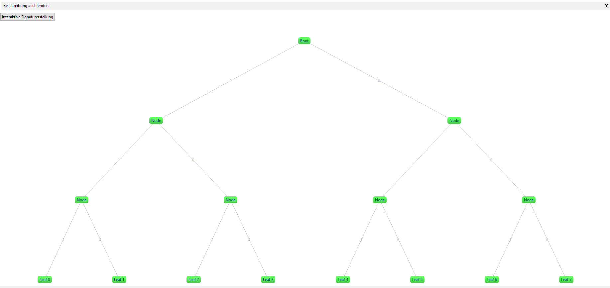
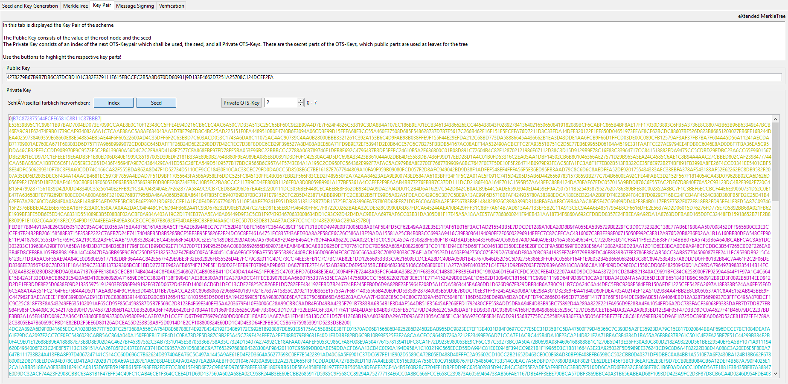

This online help explains the basic functions of the Merkle Signature Scheme plugin.
The plugin can be started either from the menu Visuals or from the Crypto Explorer in the Visuals tab.
Index:
1) Merkle Signature Scheme (MSS)
2) eXtended Merkle Signature Scheme (XMSS)
3) Usage
4) Sources
1) Merkle Signature Scheme (MSS)
Using the Merkle Signature Scheme, messages can be signed quantum computer resistant. The signature consists of two parts: the one-time signature (OTS) and the MerkleTree (a binary hashtree). The advantage of MerkleTrees is, that only one Merkle public key is needed for several OTS public keys.
This is implemented by merging the hash values of the public key using the OTS MerkleTrees into a single hash value at the top of the tree. This value in the root node contains the Merkle public key.

2) eXtended Merkle Signature Scheme (XMSS)
The eXtended Merkle Signature Scheme (XMSS) is a method based on the Merkle Signature Scheme. The main difference to MSS is the usage of bitmasks and L-Trees. Because of these two extensions no collision-resistant hash function is needed any more. Only a second preimage resistant hash function is needed to guarantee security. This has two advantages: a) As a second preimage-resistant hash function is a weaker prerequisite, the XMSS scheme is stronger (harder to break). b) The signature is smaller as when using MSS.
As OTS the XMSS uses the Winternitz One Time Signature (WOTS). There are two different variations, WOTS+ or WOTS$. In this plugin we use the WOTS+ scheme. In both variations, there is a freely chosen number of WOTS keypairs generated out of a random seed with the help of a pseudo-random key generator. Altogether, 2^h messages with a lenght of m bytes can be signed.
The bitmask is a pseudo-random binary value. The bitmask is used to avoid the need of a collision-resistant hash function. Bitmasks are used in the XMSS-Tree and in the L-Tree.
The Winternitz parameter is used in the Winternitz-OTS (W-OTS). It determines the signature length. A larger value leads to shorter signatures but increased computation effort. It does not affect the scheme's security.
L-Trees are using the same hash functions as the XMSS-Tree, but a different bitmask. Every L-Tree has the same bitmask.


In this tab you can switch between the different modes (MSS, XMSS). There is also an option to define the seed, set the Winternitz parameter, set the amount of the secret keys, and generate the secret keys.

This image shows where the seed is defined. The seed is used to generate the secret keys. It is possible to either use a self-defined numeric seed, or create a random seed with the button Generate new seed.

If the eXtended Merkle Signature Scheme (XMSS) is used, there is another box, where you can define the seed for the bitmask.

Despite the Winternitz parameter could have any size, here it can be set only to 4 or 16 as these are the most commonly used values.

This tab is used to display the created Merkle tree. The tree consists of leafs, the nodes, and the root node. The root node is also known as the Merkle public key. If a node is chosen, the path to the root node is marked yellow. The verification path, which is part of the signature, is marked red. If a node or a leaf is chosen its hash value is displayed in the upper left area. The full tree can be viewed by clicking Hide description.
With the Interactive Signature Generator you can follow the signature generation process step by step.

The public key and the private key are shown in the third tab. You can highlight the respective parts of the private key by clicking the buttons.

This tab is used to generate signatures. The signature are generated using the keys defined in tab 1. You can enter a user defined text, and after pressing Sign message this message is going to be signed, using the Merkle signature scheme.

This picture shows the signature of a message and the length of the signature in bytes. The signature has the following structure: Index of the key pair | OTS signature | Authentication path.

The signature created before can be verified in this tab. The correct leaf (this is the one with the correct index) is pre-selected when opening this tab. Clicking on Verify tries to verify the signature with the selected leaf by calculating the WOTS public key of the WOTS signature. Then this WOTS key is used to calculate the corresponding leaf of the L-Tree.

You can also choose another (wrong) leaf. If you do so, the verification will fail.